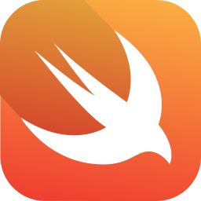

Converts 100 usd to eur as you type
Type 5 km in mi or 100 usd to eur. ↵ copies the answer, ⌘↵ pastes it where you were typing.
Press ⌥Space and type. Slashlight opens apps, runs your own slash commands, converts units and keeps your clipboard history, with no account and no tracking.
Type a slash and every command you wrote opens by name: a shell script, a Shortcut, a URL with your search in it, an HTTP call or AppleScript. Type anything else and it searches your Mac like Spotlight does.
Type 5 km in mi or 100 usd to eur. ↵ copies the answer, ⌘↵ pastes it where you were typing.
Clipboard history keeps text, images and files for 30 days, encrypted on your Mac.
Halves, thirds and quarters on ⌃⌥ and an arrow. ⌥Tab shows every window on every Space.
Type a > and a command. It runs in a real terminal tab that keeps going after the panel closes.
No account and no analytics. Slashlight goes online to look for updates once a day and to fetch exchange rates when you convert a currency.
0
accounts to create
2
network calls in a default setup
30
days of clipboard history, then deleted
There is no Pro plan, no seat price and no account. The MIT license lets you read, change and share the code.
Clipboard history, snippets, emoji, window layouts, the switcher, terminal tabs, Usage Insights
$0Any language, as many as you like
$0Signed builds that install themselves, with an optional beta channel
$0None to create, nothing to sign in to
NoneAn extension is a folder with a manifest and a program that reads JSON on stdin and answers on stdout. Each runs in a macOS sandbox with only the folders and hosts it declares. Raycast script commands work unchanged.

// Extensions/uuid/manifest.json { "id": "uuid", "title": "UUID Generator", "triggers": ["commands", "command:uuid"], "exec": ["/usr/bin/env", "python3", "extension.py"], "permissions": {}, "hotkeys": [{ "id": "paste-new", "title": "Paste a new UUID", "scope": "global", "default": "ctrl+opt+u" }] } # extension.py: answer each request on stdout for line in sys.stdin: request = json.loads(line) if request["type"] == "hotkey": reply({"type": "outcome", "outcome": { "type": "paste", "value": str(uuid.uuid4())}})
Slashlight is not notarized by Apple, which needs a paid developer account. Run xattr -dr com.apple.quarantine /Applications/Slashlight.app once; updates after that open normally.
Yes. The welcome tour offers ⌘Space and opens the setting that frees it from Spotlight.
Accessibility for window layouts and pasting, Screen Recording for window thumbnails. Both are optional and asked when you first need them.
No. Slashlight is built with AppKit and SwiftUI and runs on macOS 14 and later only.
In ~/Library/Application Support/Slashlight as plain JSON. Clipboard history is encrypted with a key in your Keychain.